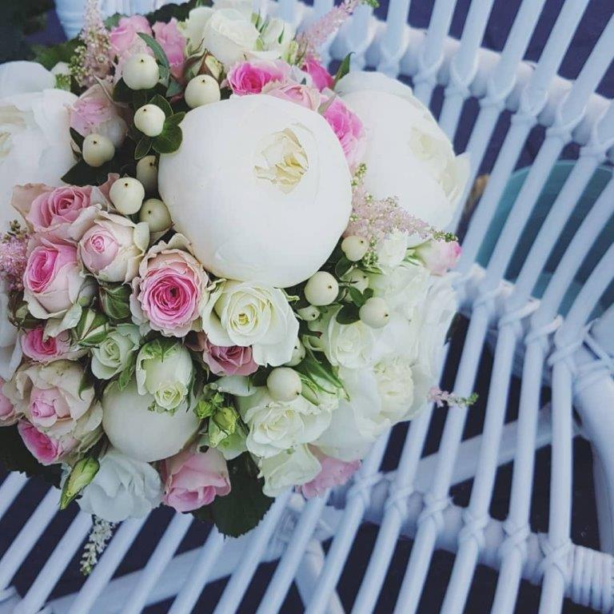
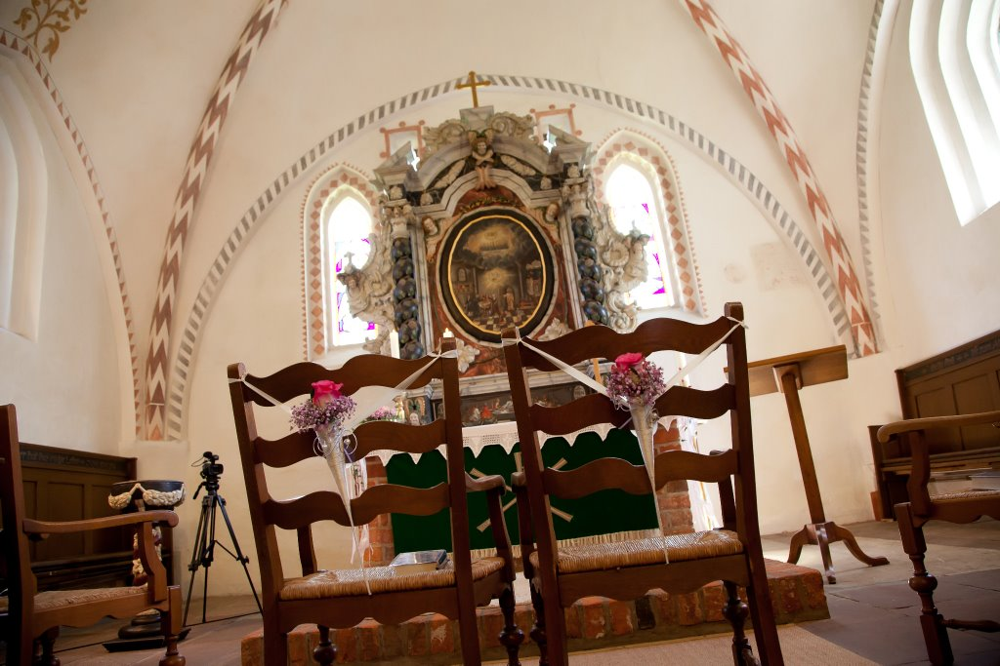
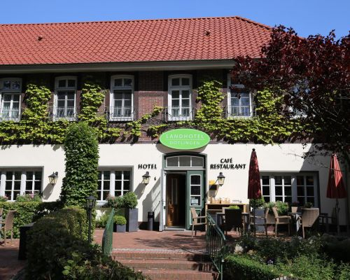

Herzliche Einladung zu unserer Hochzeit
... und alles was ihr dazu wissen müsst!
Eine zufällige Begegnung? Liebe auf den ersten Blick!
Unsere Herzen haben gesprochen – wir heiraten!
Julia & Tim!
18. Mai 2019
Wir freuen uns schon heute auf ein wunderschönes gemeinsames Fest mit Euch!
Damit Ihr genau wisst, wie der Ablauf unserer Feier ist, haben wir Euch ein paar wichtige Informationen zusammengestellt.
Los geht es mit unserer standesamtlichen Trauung im Püttenhus Dötlingen um 11 Uhr.
Diese findet im Kreise der Familie statt, da im Püttenhaus die Raumkapazität begrenzt ist.

Zu unserer kirchlichen Trauung um 16.00 Uhr, in der wunderschönen kleinen St. Firminus Kirche in Dötlingen, sind dann alle Gäste herzlich willkommen!
Direkt an der Kirche gibt es nur eine begrenzte Anzahl von Parkplätzen und wir bitten Euch, auf die Seitenstraßen auszuweichen. Bitte plant deshalb genug Zeit ein.
Nach der Zeremonie findet noch eine kleine Fotosession statt.

Im Anschluss an den Gottesdienst werden wir um 18.30 Uhr im Landhotel Dötlingen erwartet. Dort möchten wir unseren schönsten Tag ausgiebig mit Euch feiern.
Liebe ist wunderbar. Sie zu besiegeln noch tausendmal schöner!

Wir haben im Landhotel Zimmer auf unseren Namen reserviert. Da die Anzahl begrenzt ist, bucht bitte rechtzeitig. Außerdem haben wir noch einige Übernachtungsmöglichkeiten im Umkreis für Euch herausgesucht.
Bitte kontaktiert die Hotels direkt.
Hier findet ihr darüber hinaus eine Zusammenstellung der Orte, damit ihr dort hin navigieren könnt.
Weitere Infos...
Bitte lasst uns bis zum 20. April 2019 wissen, ob wir Euch als unsere Gäste begrüßen dürfen.
Dresscode: Wir bitten um legere Abendmode, mit der ihr ordentlich das Tanzbein schwingen könnt.
Geschenkewunsch: Da wir gerade in der Planung für eine Renovierung sind, würden wir uns sehr über finanzielle Unterstützung hierzu freuen.
Wir freuen uns schon sehr, euch auf unserer Feier begrüßen zu können!
Bei weiteren Fragen kontaktiert bitte: brautpaar@brautpaar.de
Eure Julia & Tim!